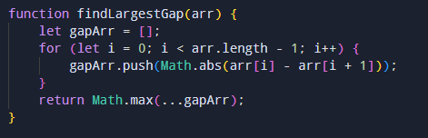

Javascript Post Template
Copied! to Clipboard.
Write a function to find the largest gap between two consecutive numbers.
Instructions eturn the largest gap between two consecutive numbers in the array arr . For example, given [3, 5, 9, 10, 8], the difference between consecutive numbers are 2 (3 - 5), 4 (5 - 9) , 1 (9 - 10) and 2 (10 - 8). Here, the largest difference is 4.Input:
arr[] = [1, 3, 8, 9]Output:
5Code:

Gunal.codes